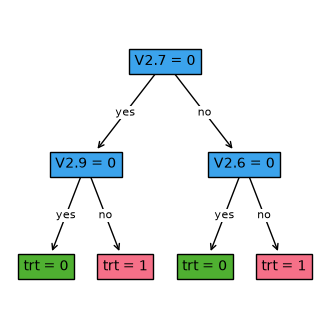

[1]:
import pandas as pd
import matplotlib.pyplot as plt
from odtlearn.flow_opt import FlowOPT_IPW, FlowOPT_DM, FlowOPT_DR
from odtlearn.datasets import prescriptive_ex_data
FlowOPT Examples¶
We will look at the different methods of learning optimal prescriptive trees: inverse probability weighting (IPW), direct method (DM), and doubly robust (DR)
Example 0: Preparing the Data¶
We will first load a synthetic dataset to use as our running example. In this example, we have precomputed the learned inverse propensity weights (IPW) and predicted outcomes for the direct method (DM). At least one of these values must be computed in order to use any of the prescriptive tree classifiers in ODTLearn. The advantages and disadvantages of using each type of prescriptive tree is given in the subsequent examples, and we refer to Dudik et al. (2011) and Jo et al. (2021) for more details.
The column names in this dataset that correspond to the IPW weights and predicted outcomes for DM are:
prob_t_pred_logis the inverse propensity weight learned through logistic regressionprob_t_pred_treeis the inverse propensity weight learned through a decision treelinear0is the predicted outcome under treatment 0 learned through linear regressionlinear1is the predicted outcome under treatment 1 learned through linear regressionlasso0is the predicted outcome under treatment 0 learned through lasso regressionlasso0is the predicted outcome under treatment 2 learned through lasso regression
[2]:
# Read data
train_data, test_data = prescriptive_ex_data()
print(f'shape{train_data.shape}')
train_data = train_data.sample(frac=0.1,random_state=42).reset_index(drop=True) # Taking a small subset of the data for example purposes
test_data = test_data.sample(frac=0.2, random_state=42).reset_index(drop=True)
train_data.head()
shape(500, 31)
[2]:
| V1.1 | V1.2 | V1.3 | V1.4 | V1.5 | V1.6 | V1.7 | V1.8 | V1.9 | V1.10 | ... | y1 | t | prob_t | y | prob_t_pred_log | prob_t_pred_tree | linear0 | lasso0 | linear1 | lasso1 | |
|---|---|---|---|---|---|---|---|---|---|---|---|---|---|---|---|---|---|---|---|---|---|
| 0 | 0 | 0 | 0 | 0 | 0 | 0 | 0 | 1 | 1 | 1 | ... | 0.601624 | 1 | 0.5 | 0.601624 | 0.466833 | 0.466 | 0.491137 | 0.485787 | 0.574565 | 0.539485 |
| 1 | 0 | 0 | 1 | 1 | 1 | 1 | 1 | 1 | 1 | 1 | ... | 0.219783 | 1 | 0.5 | 0.219783 | 0.483647 | 0.466 | 0.152827 | 0.327543 | 0.219158 | 0.433684 |
| 2 | 0 | 0 | 0 | 0 | 0 | 0 | 1 | 1 | 1 | 1 | ... | 0.454380 | 0 | 0.5 | 0.319519 | 0.525567 | 0.534 | 0.336105 | 0.401297 | 0.443978 | 0.490118 |
| 3 | 0 | 0 | 0 | 1 | 1 | 1 | 1 | 1 | 1 | 1 | ... | 0.425231 | 0 | 0.5 | 0.390287 | 0.528118 | 0.534 | 0.391595 | 0.452416 | 0.434434 | 0.509328 |
| 4 | 0 | 1 | 1 | 1 | 1 | 1 | 1 | 1 | 1 | 1 | ... | 0.575465 | 0 | 0.5 | 0.663447 | 0.540226 | 0.534 | 0.642607 | 0.611545 | 0.585660 | 0.590906 |
5 rows × 31 columns
Note: In practice, users should learn IPW weights and predicted outcomes in the following manner:
IPW weights can be learned using a standard machine learning method that predicts the probability of treatment assignments given covariates (e.g., logistic regression), then taking its inverse.
Predicted outcomes for DM are learned by training a machine learning method for each treatment
 :
:Take the subset of training data with treatment
Learn a machine learning model that can predict the outcome
 under treatment using that subset of training data through, e.g., lasso regression
under treatment using that subset of training data through, e.g., lasso regressionPredict the outcome
under treatment using the learned model
Example 1: Inverse Propensity Weighting (IPW)¶
Inverse Propensity Weighting (IPW) works by creating a pseudo-population where treatment assignments are randomized, allowing us to estimate the average outcome under a learned prescriptive tree.
IPW requires learning propensities, which are the probability that each sample received its assigned treatment. This can be estimated via standard machine learning methods (e.g., logistic regression), where the covariates and assigned treatments are used to create a propensity model that predicts the probability of receiving a treatment.
IPW is only a consistent estimator when the learned propensity model is correctly specified, and may suffer from high variance and sensitivity to small propensity scores (leading to very high inverse propensity weights).
[3]:
X = train_data.iloc[:, 15:20] # Taking a subset of covariates for use with Gurobi restricted license limits
t = train_data["t"] # treatment
y = train_data["y"] # outcome
ipw = train_data["prob_t_pred_tree"] # IPW weights
opt_ipw = FlowOPT_IPW(solver="gurobi", depth=2, time_limit=300)
opt_ipw.fit(X, t, y, ipw) # pass in IPW weights in the fit function
Restricted license - for non-production use only - expires 2027-11-29
Set parameter TimeLimit to value 300
Gurobi Optimizer version 13.0.2 build v13.0.2rc1 (linux64 - "Ubuntu 24.04.4 LTS")
CPU model: AMD EPYC 9V74 80-Core Processor, instruction set [SSE2|AVX|AVX2]
Thread count: 2 physical cores, 4 logical processors, using up to 4 threads
Non-default parameters:
TimeLimit 300
Optimize a model with 1014 rows, 736 columns and 2803 nonzeros (Max)
Model fingerprint: 0xbf6dc368
Model has 50 linear objective coefficients
Variable types: 714 continuous, 22 integer (22 binary)
Coefficient statistics:
Matrix range [1e+00, 1e+00]
Objective range [4e-01, 2e+00]
Bounds range [1e+00, 1e+00]
RHS range [1e+00, 1e+00]
Found heuristic solution: objective -0.0000000
Presolve removed 605 rows and 506 columns
Presolve time: 0.00s
Presolved: 409 rows, 230 columns, 1292 nonzeros
Found heuristic solution: objective 27.2886911
Variable types: 212 continuous, 18 integer (18 binary)
Root relaxation: objective 4.557964e+01, 303 iterations, 0.00 seconds (0.00 work units)
Nodes | Current Node | Objective Bounds | Work
Expl Unexpl | Obj Depth IntInf | Incumbent BestBd Gap | It/Node Time
0 0 45.57964 0 2 27.28869 45.57964 67.0% - 0s
H 0 0 31.4587260 45.57964 44.9% - 0s
0 0 45.57964 0 4 31.45873 45.57964 44.9% - 0s
0 0 45.57964 0 7 31.45873 45.57964 44.9% - 0s
0 0 45.57964 0 7 31.45873 45.57964 44.9% - 0s
0 0 45.57964 0 7 31.45873 45.57964 44.9% - 0s
0 0 45.57964 0 7 31.45873 45.57964 44.9% - 0s
0 2 45.57964 0 7 31.45873 45.57964 44.9% - 0s
* 12 10 4 31.9674681 43.40149 35.8% 20.3 0s
* 13 10 5 32.9958399 43.40149 31.5% 19.0 0s
* 27 15 10 33.5045819 41.89721 25.0% 15.8 0s
* 64 6 9 33.7293800 37.37083 10.8% 12.8 0s
Cutting planes:
Gomory: 1
MIR: 19
Flow cover: 4
RLT: 4
Relax-and-lift: 1
BQP: 1
Explored 73 nodes (1334 simplex iterations) in 0.07 seconds (0.04 work units)
Thread count was 4 (of 4 available processors)
Solution count 7: 33.7294 33.5046 32.9958 ... -0
Optimal solution found (tolerance 1.00e-04)
Best objective 3.372937999418e+01, best bound 3.372937999418e+01, gap 0.0000%
[3]:
FlowOPT_IPW(solver=gurobi,depth=2,time_limit=300,num_threads=None,verbose=False)
[4]:
opt_ipw.print_tree()
fig, ax = plt.subplots(figsize=(4, 4))
opt_ipw.plot_tree(ax=ax, fontsize=10, color_dict={"node": None, "leaves": []})
plt.show()
#########node 1
branch on V2.7
#########node 2
branch on V2.8
#########node 3
branch on V2.6
#########node 4
leaf 0
#########node 5
leaf 1
#########node 6
leaf 0
#########node 7
leaf 1
Example 2: Direct Method¶
The Direct Method (DM) works by modeling the outcomes under each treatment directly, which allows for an estimate of the outcome of each data sample under a different treatment assignment.
DM requires learning an outcome model for each treatment in the data. This can be estimated via standard machine learning methods (e.g., lasso regression), where the subset of individuals in the data that received one treatment assignment is used to create the outcome model under that treatment.
DM is only a consistent estimator when the outcome models are correctly specified, and suffers from high bias as it requires extrapolating the outcome beyond the individuals that historically received that treatment.
[5]:
X = train_data.iloc[:, 15:20] # covariates
t = train_data["t"] # treatment
y = train_data["y"] # outcome
y_hat = train_data[["linear0", "linear1"]] # estimated outcomes
opt_dm = FlowOPT_DM(solver="gurobi", depth=2, time_limit=300)
opt_dm.fit(X, t, y, y_hat) # pass in estimated outcomes in the fit function
Set parameter TimeLimit to value 300
Gurobi Optimizer version 13.0.2 build v13.0.2rc1 (linux64 - "Ubuntu 24.04.4 LTS")
CPU model: AMD EPYC 9V74 80-Core Processor, instruction set [SSE2|AVX|AVX2]
Thread count: 2 physical cores, 4 logical processors, using up to 4 threads
Non-default parameters:
TimeLimit 300
Optimize a model with 1414 rows, 1086 columns and 3903 nonzeros (Max)
Model fingerprint: 0xde838f85
Model has 700 linear objective coefficients
Variable types: 1064 continuous, 22 integer (22 binary)
Coefficient statistics:
Matrix range [1e+00, 1e+00]
Objective range [2e-01, 9e-01]
Bounds range [1e+00, 1e+00]
RHS range [1e+00, 1e+00]
Found heuristic solution: objective 26.4357477
Presolve removed 634 rows and 534 columns
Presolve time: 0.01s
Presolved: 780 rows, 552 columns, 2510 nonzeros
Variable types: 534 continuous, 18 integer (18 binary)
Root relaxation: objective 2.834794e+01, 272 iterations, 0.00 seconds (0.00 work units)
Nodes | Current Node | Objective Bounds | Work
Expl Unexpl | Obj Depth IntInf | Incumbent BestBd Gap | It/Node Time
0 0 28.34794 0 2 26.43575 28.34794 7.23% - 0s
H 0 0 27.7780800 28.34794 2.05% - 0s
0 0 28.34794 0 9 27.77808 28.34794 2.05% - 0s
H 0 0 27.9719234 28.34794 1.34% - 0s
0 0 28.34794 0 6 27.97192 28.34794 1.34% - 0s
0 0 28.34794 0 6 27.97192 28.34794 1.34% - 0s
0 0 28.34794 0 8 27.97192 28.34794 1.34% - 0s
0 0 28.34794 0 6 27.97192 28.34794 1.34% - 0s
0 0 28.34794 0 6 27.97192 28.34794 1.34% - 0s
0 2 28.34794 0 6 27.97192 28.34794 1.34% - 0s
* 23 12 7 28.0371003 28.34794 1.11% 29.8 0s
Cutting planes:
MIR: 20
Flow cover: 4
RLT: 2
Relax-and-lift: 1
Explored 56 nodes (1719 simplex iterations) in 0.12 seconds (0.08 work units)
Thread count was 4 (of 4 available processors)
Solution count 4: 28.0371 27.9719 27.7781 26.4357
Optimal solution found (tolerance 1.00e-04)
Best objective 2.803710031053e+01, best bound 2.803710031053e+01, gap 0.0000%
[5]:
FlowOPT_DM(solver=gurobi,depth=2,time_limit=300,num_threads=None,verbose=False)
[6]:
opt_dm.print_tree()
fig, ax = plt.subplots(figsize=(4, 4))
opt_dm.plot_tree(ax=ax, fontsize=10, color_dict={"node": None, "leaves": []})
plt.show()
#########node 1
branch on V2.7
#########node 2
branch on V2.8
#########node 3
branch on V2.6
#########node 4
leaf 0
#########node 5
leaf 1
#########node 6
leaf 0
#########node 7
leaf 1

Example 3: Doubly Robust Method¶
The Doubly Robust Method (DR) combines the IPW and DM methods. The DR method uses an estimated outcome model (similar to DM), and corrects any bias from the outcome model using IPW.
DR is consistent if either the propensity model OR the outcome model is correctly specified. However, it does require learning both the IPW weights and the outcome models under each treatment.
[7]:
X = train_data.iloc[:, 15:20] # covariates
t = train_data["t"] # treatment
y = train_data["y"] # outcome
ipw = train_data["prob_t_pred_tree"] # IPW weights
y_hat = train_data[["linear0", "linear1"]] # estimated outcomes
opt_dr = FlowOPT_DR(solver="gurobi", depth=2, time_limit=300)
opt_dr.fit(X, t, y, ipw, y_hat) # Pass in both IPW weights and estimated outcomes in the fit function
Set parameter TimeLimit to value 300
Gurobi Optimizer version 13.0.2 build v13.0.2rc1 (linux64 - "Ubuntu 24.04.4 LTS")
CPU model: AMD EPYC 9V74 80-Core Processor, instruction set [SSE2|AVX|AVX2]
Thread count: 2 physical cores, 4 logical processors, using up to 4 threads
Non-default parameters:
TimeLimit 300
Optimize a model with 1414 rows, 1086 columns and 3903 nonzeros (Max)
Model fingerprint: 0x2a6fcff6
Model has 700 linear objective coefficients
Variable types: 1064 continuous, 22 integer (22 binary)
Coefficient statistics:
Matrix range [1e+00, 1e+00]
Objective range [2e-01, 9e-01]
Bounds range [1e+00, 1e+00]
RHS range [1e+00, 1e+00]
Found heuristic solution: objective 26.2414664
Presolve removed 634 rows and 534 columns
Presolve time: 0.01s
Presolved: 780 rows, 552 columns, 2510 nonzeros
Variable types: 534 continuous, 18 integer (18 binary)
Root relaxation: objective 2.869269e+01, 282 iterations, 0.00 seconds (0.00 work units)
Nodes | Current Node | Objective Bounds | Work
Expl Unexpl | Obj Depth IntInf | Incumbent BestBd Gap | It/Node Time
0 0 28.69269 0 4 26.24147 28.69269 9.34% - 0s
H 0 0 27.9231182 28.69269 2.76% - 0s
0 0 28.69269 0 7 27.92312 28.69269 2.76% - 0s
H 0 0 28.0904572 28.69269 2.14% - 0s
0 0 28.69269 0 7 28.09046 28.69269 2.14% - 0s
0 0 28.69269 0 7 28.09046 28.69269 2.14% - 0s
0 0 28.69269 0 7 28.09046 28.69269 2.14% - 0s
H 0 0 28.1093786 28.69269 2.08% - 0s
0 0 28.69269 0 6 28.10938 28.69269 2.08% - 0s
0 0 28.69269 0 6 28.10938 28.69269 2.08% - 0s
0 2 28.69269 0 6 28.10938 28.69269 2.08% - 0s
* 9 7 6 28.2406652 28.67666 1.54% 43.0 0s
Cutting planes:
Gomory: 2
MIR: 3
Flow cover: 2
RLT: 4
Explored 37 nodes (1415 simplex iterations) in 0.11 seconds (0.08 work units)
Thread count was 4 (of 4 available processors)
Solution count 5: 28.2407 28.1094 28.0905 ... 26.2415
Optimal solution found (tolerance 1.00e-04)
Best objective 2.824066517198e+01, best bound 2.824066517198e+01, gap 0.0000%
[7]:
FlowOPT_DR(solver=gurobi,depth=2,time_limit=300,num_threads=None,verbose=False)
[8]:
opt_dr.print_tree()
fig, ax = plt.subplots(figsize=(4, 4))
opt_dr.plot_tree(ax=ax, fontsize=10, color_dict={"node": None, "leaves": []})
plt.show()
#########node 1
branch on V2.7
#########node 2
branch on V2.9
#########node 3
branch on V2.6
#########node 4
leaf 0
#########node 5
leaf 1
#########node 6
leaf 0
#########node 7
leaf 1

Example 4: Comparing Performance¶
It may be of interest to compare the performance of each type of estimator. We can compute summary statistics on the average outcome from each learned tree.
In practice, DR is the typical preferred choice as it is consistent if either IPW or DR methods are consistent. IPW also remains a popular choice since it relies on just one propensity model to learn. We refer to Dudik et al. (2011) and Jo et al. (2021) for more details.
[9]:
# Read test data
print(f'shape{test_data.shape}')
test_data.columns
test_data.head()
shape(20, 27)
[9]:
| V1.1 | V1.2 | V1.3 | V1.4 | V1.5 | V1.6 | V1.7 | V1.8 | V1.9 | V1.10 | ... | V2.8 | V2.9 | V2.10 | y0 | y1 | t | prob_t | y | prob_t_pred_log | prob_t_pred_tree | |
|---|---|---|---|---|---|---|---|---|---|---|---|---|---|---|---|---|---|---|---|---|---|
| 0 | 0 | 0 | 1 | 1 | 1 | 1 | 1 | 1 | 1 | 1 | ... | 1 | 1 | 1 | 0.530883 | 0.492669 | 0 | 0.5 | 0.530883 | 0.537961 | 0.534 |
| 1 | 0 | 1 | 1 | 1 | 1 | 1 | 1 | 1 | 1 | 1 | ... | 1 | 1 | 1 | 0.411497 | 0.356187 | 1 | 0.5 | 0.356187 | 0.470692 | 0.466 |
| 2 | 0 | 0 | 0 | 0 | 0 | 0 | 1 | 1 | 1 | 1 | ... | 1 | 1 | 1 | 0.517887 | 0.501766 | 0 | 0.5 | 0.517887 | 0.536472 | 0.534 |
| 3 | 1 | 1 | 1 | 1 | 1 | 1 | 1 | 1 | 1 | 1 | ... | 1 | 1 | 1 | 0.242120 | 0.146275 | 1 | 0.5 | 0.146275 | 0.481979 | 0.466 |
| 4 | 1 | 1 | 1 | 1 | 1 | 1 | 1 | 1 | 1 | 1 | ... | 0 | 0 | 1 | 0.649355 | 0.527296 | 0 | 0.5 | 0.649355 | 0.544013 | 0.534 |
5 rows × 27 columns
[10]:
# Predict
X_test = test_data.iloc[:, 15:20] # covariates
y_0_test = test_data["y0"] # estimated outcome under treatment 0
y_1_test = test_data["y1"] # estimated outcome under treatment 1
predict_ipw = opt_ipw.predict(X_test)
predict_dm = opt_dm.predict(X_test)
predict_dr = opt_dr.predict(X_test)
[11]:
# Check the outcome
def calculate_outcome(y0, y1, predict):
total_outcome = 0
for i in range(len(predict)):
if predict[i] == 0:
total_outcome += y0[i]
else:
total_outcome += y1[i]
return total_outcome / len(predict)
print("IPW test estimated outcome: ", calculate_outcome(y_0_test, y_1_test, predict_ipw))
print("DM test estimated outcome: ", calculate_outcome(y_0_test, y_1_test, predict_dm))
print("DR test estimated outcome: ", calculate_outcome(y_0_test, y_1_test, predict_dr))
IPW test estimated outcome: 0.5109253363383204
DM test estimated outcome: 0.5109253363383204
DR test estimated outcome: 0.5123693781552128
References¶
Dudík, M., Langford, J., & Li, L. (2011). Doubly robust policy evaluation and learning. In Proceedings of the 28th International Conference on International Conference on Machine Learning (pp. 1097-1104).
Jo, N., Aghaei, S., Gómez, A., & Vayanos, P. (2021). Learning optimal prescriptive trees from observational data. arXiv preprint arXiv:2108.13628.
[ ]: